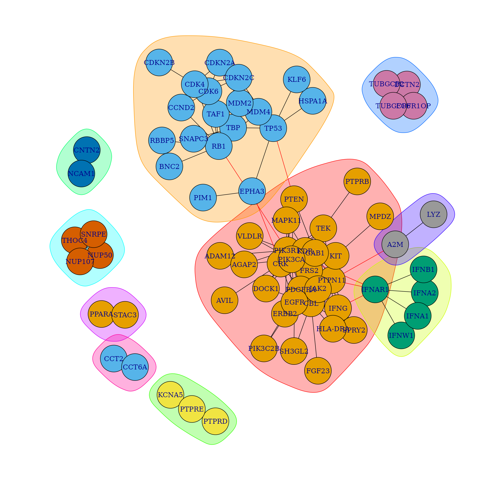
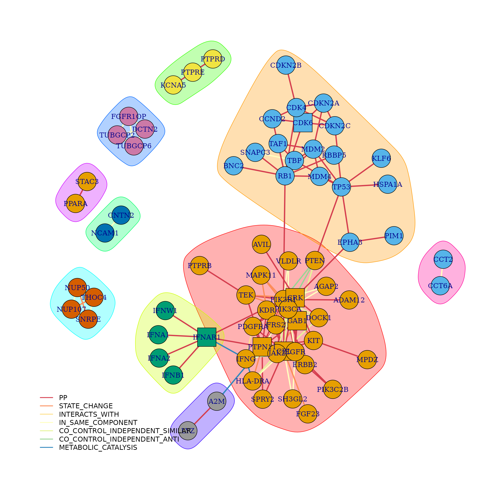
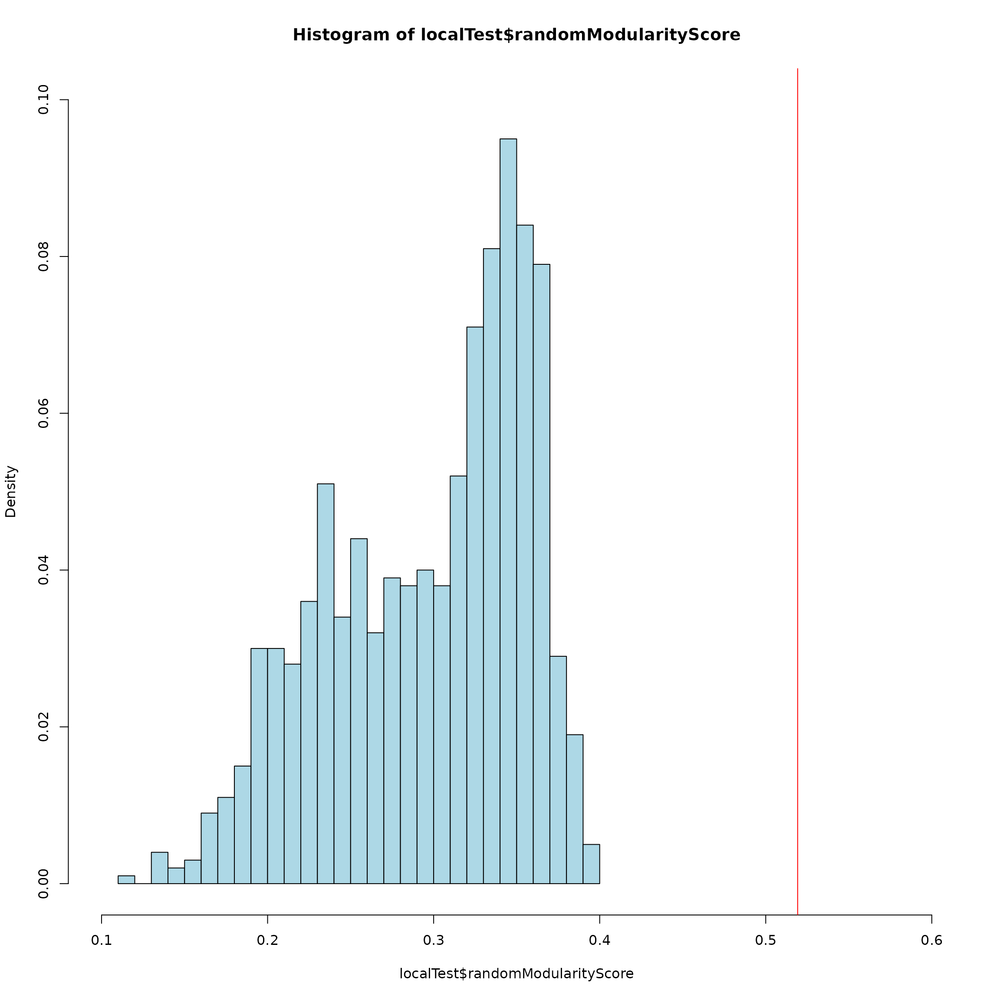

NetBoxR Tutorial
Eric Minwei Liu and Augustin Luna
19 May, 2023
netboxrTutorial.RmdOverview
The netboxr package composes a number of functions to retrive and process genetic data from large-scale genomics projects (e.g. TCGA projects) including from mutations, copy number alterations, gene expression and DNA methylation. The netboxr package implements NetBox algorithm in R package. NetBox algorithm integrates genetic alterations with literature-curated pathway knowledge to identify pathway modules in cancer. NetBox algorithm uses (1) global network null model and (2) local network null model to access the statistic significance of the discovered pathway modules.
Basics
Installation
BiocManager::install("netboxr")Example of Cerami et al. PLoS One 2010
This is an example to reproduce the network discovered on Cerami et al.(2010).
The results presented here are comparable to the those from Cerami et al. 2010 though the unadjusted p-values for linker genes are not the same. It is because the unadjusted p-value of linker genes in Cerami et al. 2010 were calculated by the probabiliy of the observed data point, Pr(X). The netboxr used the probability of an observed or more extreme assuming the null hypothesis is true, Pr(X>=x|H), as unadjusted p-value for linker genes. The final number of linker genes after FDR correction are the same between netboxr result and original Cerami et al. 2010.
Load Human Interactions Network (HIN) network
Load pre-defined HIN network and simplify the interactions by removing loops and duplicated interactions in the network. The netowork after reduction contains 9264 nodes and 68111 interactions.
data(netbox2010)
sifNetwork <- netbox2010$network
graphReduced <- networkSimplify(sifNetwork, directed = FALSE)## Loading network of 9264 nodes and 157780 interactions## Treated as undirected network## Removing multiple interactions and loops## Returning network of 9264 nodes and 68111 interactionsLoad altered gene list
The altered gene list contains 517 candidates from mutations and copy number alterations.
geneList <- as.character(netbox2010$geneList)
length(geneList)## [1] 517Map altered gene list on HIN network
The geneConnector function in the netboxr package takes altered gene list as input and maps the genes on the curated network to find the local processes represented by the gene list.
## Use Benjamini-Hochberg method to do multiple hypothesis correction for
## linker candidates.
## Use edge-betweeness method to detect community structure in the network.
threshold <- 0.05
results <- geneConnector(geneList = geneList, networkGraph = graphReduced, directed = FALSE,
pValueAdj = "BH", pValueCutoff = threshold, communityMethod = "ebc", keepIsolatedNodes = FALSE)## 274 / 517 candidate nodes match the name in the network of 9264
## nodes## Only test neighbor nodes with local degree equals or exceeds 2## Multiple hypothesis corrections for 892 neighbor nodes in the network## For p-value 0.05 cut-off, 6 nodes were included as linker nodes## Connecting 274 candidate nodes and 6 linker nodes## Remove 208 isolated candidate nodes from the input## Final network contains 72 nodes and 152 interactions## Detecting modules using "edge betweeness" method
# Add edge annotations
library(RColorBrewer)
edges <- results$netboxOutput
interactionType <- unique(edges[, 2])
interactionTypeColor <- brewer.pal(length(interactionType), name = "Spectral")
edgeColors <- data.frame(interactionType, interactionTypeColor, stringsAsFactors = FALSE)
colnames(edgeColors) <- c("INTERACTION_TYPE", "COLOR")
netboxGraphAnnotated <- annotateGraph(netboxResults = results, edgeColors = edgeColors,
directed = FALSE, linker = TRUE)
# Check the p-value of the selected linker
linkerDF <- results$neighborData
linkerDF[linkerDF$pValueFDR < threshold, ]## idx name localDegree globalDegree pValueRaw oddsRatio pValueFDR
## CRK 1712 CRK 11 81 2.392088e-05 1.708732 0.01866731
## IFNAR1 4546 IFNAR1 6 23 4.185496e-05 2.518726 0.01866731
## CBL 20 CBL 14 140 6.505470e-05 1.361057 0.01934293
## GAB1 500 GAB1 8 57 2.483197e-04 1.751122 0.04887827
## CDK6 414 CDK6 5 21 3.008515e-04 2.406906 0.04887827
## PTPN11 84 PTPN11 14 163 3.287776e-04 1.191405 0.04887827
# The geneConnector function returns a list of data frames.
names(results)## [1] "netboxGraph" "netboxCommunity" "netboxOutput" "nodeType"
## [5] "moduleMembership" "neighborData"
# Plot graph with the Fruchterman-Reingold layout algorithm As an example, plot
# both the original and the annotated graphs Save the layout for easier
# comparison
graph_layout <- layout_with_fr(results$netboxGraph)
# plot the original graph
plot(results$netboxCommunity, results$netboxGraph, layout = graph_layout)
# Plot the edge annotated graph
plot(results$netboxCommunity, netboxGraphAnnotated, layout = graph_layout, vertex.size = 10,
vertex.shape = V(netboxGraphAnnotated)$shape, edge.color = E(netboxGraphAnnotated)$interactionColor,
edge.width = 3)
# Add interaction type annotations
legend("bottomleft", legend = interactionType, col = interactionTypeColor, lty = 1,
lwd = 2, bty = "n", cex = 1)
Consistency with Previously Published Results
The GBM result by netboxr identified exactly the same linker genes (6 linker genes), the same number of modules (10 modules) and the same genes in each identified module as GBM result in Cerami et al. 2010.
The results of netboxr are consistent with previous implementation of the NetBox algorithm. The RB1 and PIK3R1 modules are clearly represented in the figure. For example, the RB1 module contains genes in blue color and enclosed by light orange circle. The PIK3R1 module contains genes in orange color and enclosed by pink circle.
Statistical Significance of Discovered Network
NetBox algorithm used (1) global network null model and (2) local network null model to access the statistical significance of the discovered network.
Global Network Null Model
The global network null model calculates the empirical p-value as the number of times (over a set of iterations) the size of the largest connected component (the giant component) in the network coming from the same number of randomly selected genes (number of genes is 274 in this example) equals or exceeds the size of the largest connected component in the observed network. The suggested iterations are 1000.
## This function will need a lot of time to complete.
globalTest <- globalNullModel(netboxGraph = results$netboxGraph, networkGraph = graphReduced,
iterations = 10, numOfGenes = 274)Local Network Null Model
Local network null model evaluates the deviation of modularity in the observed network from modularity distribution in the random network. For each interaction, a random network is produced from local re-wiring of literature curated network. It means all nodes in the network kept the same degree of connections but connect to new neighbors randomly. Suggested iterations is 1000.
localTest <- localNullModel(netboxGraph = results$netboxGraph, iterations = 1000)## ############# Based on 1000 random trails## Random networks: mean modularity = 0.297## Random networks: sd modularity = 0.059## Observed network modularity is: 0.519## Observed network modularity z-score is: 3.74## One-tail p-value is: 9.185e-05Through 1000 iterations, we can obtain the mean and the standard deviation of modularity in the local network null model. Using the mean (~0.3) and the standard deviation (0.06), we can covert the observed modularity in the network (0.519) into a Z-score (~3.8). From the Z-score, we can calculate one-tail p-value. If one-tail pvalue is less than 0.05, the observed modularity is significantly different from random. In the histogram, the blue region is the distribution of modularity in the local network null model. The red vertical line is the observed modularity in the NetBox results.
h <- hist(localTest$randomModularityScore, breaks = 35, plot = FALSE)
h$density = h$counts/sum(h$counts)
plot(h, freq = FALSE, ylim = c(0, 0.1), xlim = c(0.1, 0.6), col = "lightblue")
abline(v = localTest$modularityScoreObs, col = "red")
The global null model is used to assess the global connectivity (number of nodes and edges) of the largest module in the identified network compared with the same number but randomly selected gene list.
The local null model is used to assess the network modularity in the identified network compared with random re-wired network.
View Module Membership
The table below shows the module memberships for all genes.
DT::datatable(results$moduleMembership, rownames = FALSE)Write NetBox Output to Files
# Write results for further visilaztion in the cytoscape software. network.sif
# file is the NetBox algorithm output in SIF format.
write.table(results$netboxOutput, file = "network.sif", sep = "\t", quote = FALSE,
col.names = FALSE, row.names = FALSE)
# netighborList.txt file contains the information of all neighbor nodes.
write.table(results$neighborData, file = "neighborList.txt", sep = "\t", quote = FALSE,
col.names = TRUE, row.names = FALSE)
# community.membership.txt file indicates the identified pathway module
# numbers.
write.table(results$moduleMembership, file = "community.membership.txt", sep = "\t",
quote = FALSE, col.names = FALSE, row.names = FALSE)
# nodeType.txt file indicates the node is 'linker' node or 'candidate' node.
write.table(results$nodeType, file = "nodeType.txt", sep = "\t", quote = FALSE, col.names = FALSE,
row.names = FALSE)Term Enrichment in Modules using Gene Ontology (GO) Analysis
After module identification, one main task is understanding the biological processes that may be represented by the returned modules. Here we use the Bioncoductor clusterProfiler to do an enrichment analysis using GO Biological Process terms on a selected module.
## clusterProfiler v4.8.1 For help: https://yulab-smu.top/biomedical-knowledge-mining-book/
##
## If you use clusterProfiler in published research, please cite:
## T Wu, E Hu, S Xu, M Chen, P Guo, Z Dai, T Feng, L Zhou, W Tang, L Zhan, X Fu, S Liu, X Bo, and G Yu. clusterProfiler 4.0: A universal enrichment tool for interpreting omics data. The Innovation. 2021, 2(3):100141##
## Attaching package: 'clusterProfiler'## The following object is masked from 'package:igraph':
##
## simplify## The following object is masked from 'package:stats':
##
## filter
library(org.Hs.eg.db)## Loading required package: AnnotationDbi## Loading required package: stats4## Loading required package: BiocGenerics##
## Attaching package: 'BiocGenerics'## The following objects are masked from 'package:igraph':
##
## normalize, path, union## The following objects are masked from 'package:stats':
##
## IQR, mad, sd, var, xtabs## The following objects are masked from 'package:base':
##
## anyDuplicated, aperm, append, as.data.frame, basename, cbind,
## colnames, dirname, do.call, duplicated, eval, evalq, Filter, Find,
## get, grep, grepl, intersect, is.unsorted, lapply, Map, mapply,
## match, mget, order, paste, pmax, pmax.int, pmin, pmin.int,
## Position, rank, rbind, Reduce, rownames, sapply, setdiff, sort,
## table, tapply, union, unique, unsplit, which.max, which.min## Loading required package: Biobase## Welcome to Bioconductor
##
## Vignettes contain introductory material; view with
## 'browseVignettes()'. To cite Bioconductor, see
## 'citation("Biobase")', and for packages 'citation("pkgname")'.## Loading required package: IRanges## Loading required package: S4Vectors##
## Attaching package: 'S4Vectors'## The following object is masked from 'package:clusterProfiler':
##
## rename## The following object is masked from 'package:utils':
##
## findMatches## The following objects are masked from 'package:base':
##
## expand.grid, I, unname##
## Attaching package: 'IRanges'## The following object is masked from 'package:clusterProfiler':
##
## slice##
## Attaching package: 'AnnotationDbi'## The following object is masked from 'package:clusterProfiler':
##
## select##
module <- 6
selectedModule <- results$moduleMembership[results$moduleMembership$membership ==
module, ]
geneList <- selectedModule$geneSymbol
# Check available ID types in for the org.Hs.eg.db annotation package
keytypes(org.Hs.eg.db)## [1] "ACCNUM" "ALIAS" "ENSEMBL" "ENSEMBLPROT" "ENSEMBLTRANS"
## [6] "ENTREZID" "ENZYME" "EVIDENCE" "EVIDENCEALL" "GENENAME"
## [11] "GENETYPE" "GO" "GOALL" "IPI" "MAP"
## [16] "OMIM" "ONTOLOGY" "ONTOLOGYALL" "PATH" "PFAM"
## [21] "PMID" "PROSITE" "REFSEQ" "SYMBOL" "UCSCKG"
## [26] "UNIPROT"## 'select()' returned 1:1 mapping between keys and columns## Warning in bitr(geneList, fromType = "SYMBOL", toType = c("ENTREZID"), OrgDb =
## "org.Hs.eg.db"): 25% of input gene IDs are fail to map...
head(ids)## SYMBOL ENTREZID
## 1 NUP50 10762
## 3 NUP107 57122
## 4 SNRPE 6635
ego <- enrichGO(gene = ids$ENTREZID, OrgDb = org.Hs.eg.db, ont = "BP", pAdjustMethod = "BH",
pvalueCutoff = 0.01, qvalueCutoff = 0.05, readable = TRUE)Enrichment Results
head(ego)## ID Description GeneRatio BgRatio
## GO:0051028 GO:0051028 mRNA transport 2/3 130/18614
## GO:0050657 GO:0050657 nucleic acid transport 2/3 160/18614
## GO:0050658 GO:0050658 RNA transport 2/3 160/18614
## GO:0006606 GO:0006606 protein import into nucleus 2/3 163/18614
## GO:0051236 GO:0051236 establishment of RNA localization 2/3 163/18614
## GO:0051170 GO:0051170 import into nucleus 2/3 168/18614
## pvalue p.adjust qvalue geneID Count
## GO:0051028 0.0001445448 0.001811182 0.0003813015 NUP50/NUP107 2
## GO:0050657 0.0002190370 0.001811182 0.0003813015 NUP50/NUP107 2
## GO:0050658 0.0002190370 0.001811182 0.0003813015 NUP50/NUP107 2
## GO:0006606 0.0002273296 0.001811182 0.0003813015 NUP50/NUP107 2
## GO:0051236 0.0002273296 0.001811182 0.0003813015 NUP50/NUP107 2
## GO:0051170 0.0002414910 0.001811182 0.0003813015 NUP50/NUP107 2
Alternative Module Discovery Methods
In netboxr, we used the Girvan-Newman algorithm (communityMethod=“ebc”) as the default method to detect community membership in the identified network. The Girvan-Newman algorithm iteratativly removes the edge in the network with highest edge betweeness until no edges left. When the identified network contains many edges, the Girvan-Newman algorithm will spend a large amount of time to remove edges and re-calucalte the edge betweenese score in the network. If the user cannot get the community detection result in reasonable time, we suggest to switch to leading eigenvector method (communityMethod=“lec”) for community detection. Users can check original papers of the Girvan-Newman algorithm and leading eigenvector method for more details.
Alternative Pathway Data
Using Tabular Simple Interaction Format (SIF)-Based Network Data
Users can load alternative pathway data formatted in the SIF format (Simple Interaction Format). SIF is a space/tab separated format that summarizes interactions in a graph as an edgelist. In the format, every row corresponds to an individual interaction (edge) between a source and a target node. NOTE: An arbitrary interaction type can be used, such as “interacts” if the true interaction type is unknown.
PARTICIPANT_A INTERACTION_TYPE PARTICIPANT_B
nodeA relationship nodeB
nodeC relationship nodeA
nodeD relationship nodeEResources, such as the Functional Interaction network from Reactome (https://reactome.org/download-data) and StringDB (https://string-db.org/) provide network information in formats reusable as a SIF. NOTE: The next section demonstrates how to retrieve SIF-based networks for many well-known interaction databases using paxtoolsr.
SIF formatted data can be passed to networkSimplify(). The result of which is used with the geneConnector() function as other examples in this vignette demonstrate.
example <- "PARTICIPANT_A\tINTERACTION_TYPE\tPARTICIPANT_B
TP53\tinteracts\tMDM2
MDM2\tinteracts\tMDM4"
sif <- read.table(text = example, header = TRUE, sep = "\t", stringsAsFactors = FALSE)
graphReduced <- networkSimplify(sif, directed = FALSE)## Loading network of 3 nodes and 2 interactions## Treated as undirected network## Removing multiple interactions and loops## Returning network of 3 nodes and 2 interactionsUsing PaxtoolsR for Pathway Commons Data
Users can load alternative pathway data from the Pathway Commons repository using the paxtoolsr package from Bioconductor. This pathway data represents an update to the Pathway Commons data used in the original 2010 NetBox publication. Below is an example that makes use of data from the Reactome pathway database.
NOTE: Downloaded data is automatically cached to avoid unnecessary downloads.
library(paxtoolsr)
filename <- "PathwayCommons.8.reactome.EXTENDED_BINARY_SIF.hgnc.txt.gz"
sif <- downloadPc2(filename, version = "8")
# Filter interactions for specific types
interactionTypes <- getSifInteractionCategories()
filteredSif <- filterSif(sif$edges, interactionTypes = interactionTypes[["BetweenProteins"]])
filteredSif <- filteredSif[(filteredSif$INTERACTION_TYPE %in% "in-complex-with"),
]
# Re-run NetBox algorithm with new network
graphReduced <- networkSimplify(filteredSif, directed = FALSE)
geneList <- as.character(netbox2010$geneList)
threshold <- 0.05
pcResults <- geneConnector(geneList = geneList, networkGraph = graphReduced, directed = FALSE,
pValueAdj = "BH", pValueCutoff = threshold, communityMethod = "lec", keepIsolatedNodes = FALSE)
# Check the p-value of the selected linker
linkerDF <- results$neighborData
linkerDF[linkerDF$pValueFDR < threshold, ]
# The geneConnector function returns a list of data frames.
names(results)
# plot graph with the Fruchterman-Reingold layout algorithm
plot(results$netboxCommunity, results$netboxGraph, layout = layout_with_fr)Selecting Input Gene Lists for use with NetBox
The main input for the NetBox algorithm is an input list of “significantly” altered genes. Each project is different, unique considerations for how significance should be considered may be required. Researchers may seek stronger thresholds of significance for particular questions and different profiling technologies may have their own considerations. It is beyond the scope of this work to provide guidance for all situations.
However, to help users better understand the process of generating an input gene list we provide examples using best practices derived from the The Cancer Genome Project using the cBioPortal (http://cbioportal.org/), a platform that aggregates clinical genomics datasets into a standard representation. As of August 2020, cBioPortal has approximately 290 studies. In cases where appropriate data is available a similar procedure to the example can be used.
Accesing Pre-Computed Alteration Results from the cBioPortal DataHub
For TCGA studies on cBioPortal, users can access pre-processed datasets from the cBioPortal DataHub that contain significantly altered genes by mutations and copy number. Example study link: https://github.com/cBioPortal/datahub/tree/master/public/acc_tcga
- Significantly altered genes by mutations (via MutSig algorithm) are accessible within the ‘data_mutsig.txt’ file for a study; typically mutations with a q-value < 0.1 are selected as significantly altered
- Significantly altered genes by copy number (via GISTIC algorithm) are accessible within the ‘data_gistic_genes_del.txt’ (deletions) file and ‘data_gistic_genes_amp.txt’ (amplifications).
Users are directed to the accompanying study publications; study publication details are in the ‘meta_study.txt’ file for a study.
Accessing Cancer Genomics Data from cBioPortal
Users can download cancer alteration data from cBioPortal using the cgdsr package from CRAN. Here we show how a simple example for selecting genes for use with netboxr for datasets provided by cBioPortal using a using a 10% alteration frequency threshold to select genes; this general procedure has previously been used as part of TCGA studies. In the example, we consider:
- For mutations, mutations of any type contribute to the overall alteration frequency of the gene
- For copy number, discretized GISTIC-derived values for amplification or deep deletions contribute to the overall alteration frequency
The resulting gene list then becomes an input for netboxr. The resulting gene list will select EGFR and TP53, which have high alteration frequencies in glioblastoma (GBM) over the housekeeping genes ACTB and GAPDH, which have very low alteration frequencies.
library(cBioPortalData)
cbio <- cBioPortal(hostname = "www.cbioportal.org", protocol = "https", api. = "/api/api-docs")
# Find available studies, caselists, and geneticProfiles
studies <- getStudies(cbio)
samps <- sampleLists(cbio, "gbm_tcga_pub")
# find samples with both mutation and copy number data
caseList <- "gbm_tcga_pub_cnaseq"
geneticProfileTables <- molecularProfiles(api = cbio, studyId = "gbm_tcga_pub")
genes <- c("EGFR", "TP53", "RB1")
results <- sapply(genes, function(gene) {
message(sprintf("Work on %s gene", gene))
cna <- getDataByGenes(cbio, studyId = "gbm_tcga_pub", genes = gene, by = "hugoGeneSymbol",
molecularProfileId = "gbm_tcga_pub_cna_consensus", sampleListId = caseList)
mut <- getDataByGenes(cbio, studyId = "gbm_tcga_pub", genes = gene, by = "hugoGeneSymbol",
molecularProfileId = "gbm_tcga_pub_mutations", sampleListId = caseList)
cna <- cbind(cna[[1]][5], cna[[1]][8])
mut <- cbind(mut[[1]][4], mut[[1]][14])
dat <- merge(cna, mut, by = "sampleId", all = TRUE)
cna <- dat$value
mut <- dat$proteinChange
tmp <- data.frame(cna = cna, mut = mut, stringsAsFactors = FALSE)
tmp$isAltered <- abs(tmp$cna) == 2 | !is.na(tmp$mut) # Amplification or Deep Deletion or any mutation
freq <- length(which(tmp$isAltered))/nrow(tmp)
return(freq)
}, USE.NAMES = TRUE)
# 10 percent alteration frequency cutoff
geneList <- names(results)[results > 0.1]References
- Cerami E, Demir E, Schultz N, Taylor BS, Sander C (2010) Automated Network Analysis Identifies Core Pathways in Glioblastoma. PLoS ONE 5(2): e8918. doi:10.1371/journal.pone.0008918
- Cerami EG, Gross BE, Demir E, Rodchenkov I, Babur O, Anwar N, Schultz N, Bader GD, Sander C. Pathway Commons, a web resource for biological pathway data. Nucleic Acids Res. 2011 Jan;39(Database issue):D685-90. doi:10.1093/nar/gkq1039. Epub 2010 Nov 10.
Session Information
## R version 4.3.0 (2023-04-21)
## Platform: x86_64-pc-linux-gnu (64-bit)
## Running under: Ubuntu 22.04.2 LTS
##
## Matrix products: default
## BLAS: /usr/lib/x86_64-linux-gnu/openblas-pthread/libblas.so.3
## LAPACK: /usr/lib/x86_64-linux-gnu/openblas-pthread/libopenblasp-r0.3.20.so; LAPACK version 3.10.0
##
## locale:
## [1] LC_CTYPE=C.UTF-8 LC_NUMERIC=C LC_TIME=C.UTF-8
## [4] LC_COLLATE=C.UTF-8 LC_MONETARY=C.UTF-8 LC_MESSAGES=C.UTF-8
## [7] LC_PAPER=C.UTF-8 LC_NAME=C LC_ADDRESS=C
## [10] LC_TELEPHONE=C LC_MEASUREMENT=C.UTF-8 LC_IDENTIFICATION=C
##
## time zone: UTC
## tzcode source: system (glibc)
##
## attached base packages:
## [1] stats4 parallel stats graphics grDevices utils datasets
## [8] methods base
##
## other attached packages:
## [1] org.Hs.eg.db_3.17.0 AnnotationDbi_1.62.1 IRanges_2.34.0
## [4] S4Vectors_0.38.1 Biobase_2.60.0 BiocGenerics_0.46.0
## [7] clusterProfiler_4.8.1 RColorBrewer_1.1-3 netboxr_1.7.2
## [10] igraph_1.4.2 knitr_1.42 BiocStyle_2.28.0
##
## loaded via a namespace (and not attached):
## [1] jsonlite_1.8.4 magrittr_2.0.3 farver_2.1.1
## [4] rmarkdown_2.21 fs_1.6.2 zlibbioc_1.46.0
## [7] ragg_1.2.5 vctrs_0.6.2 memoise_2.0.1
## [10] RCurl_1.98-1.12 ggtree_3.8.0 htmltools_0.5.5
## [13] gridGraphics_0.5-1 sass_0.4.6 KernSmooth_2.23-20
## [16] bslib_0.4.2 htmlwidgets_1.6.2 desc_1.4.2
## [19] plyr_1.8.8 cachem_1.0.8 lifecycle_1.0.3
## [22] pkgconfig_2.0.3 gson_0.1.0 Matrix_1.5-4
## [25] R6_2.5.1 fastmap_1.1.1 GenomeInfoDbData_1.2.10
## [28] digest_0.6.31 aplot_0.1.10 enrichplot_1.20.0
## [31] colorspace_2.1-0 patchwork_1.1.2 rprojroot_2.0.3
## [34] crosstalk_1.2.0 textshaping_0.3.6 RSQLite_2.3.1
## [37] labeling_0.4.2 fansi_1.0.4 httr_1.4.6
## [40] polyclip_1.10-4 compiler_4.3.0 bit64_4.0.5
## [43] withr_2.5.0 downloader_0.4 BiocParallel_1.34.1
## [46] viridis_0.6.3 DBI_1.1.3 highr_0.10
## [49] ggforce_0.4.1 gplots_3.1.3 MASS_7.3-58.4
## [52] HDO.db_0.99.1 gtools_3.9.4 caTools_1.18.2
## [55] tools_4.3.0 ape_5.7-1 scatterpie_0.1.9
## [58] glue_1.6.2 nlme_3.1-162 GOSemSim_2.26.0
## [61] shadowtext_0.1.2 grid_4.3.0 reshape2_1.4.4
## [64] fgsea_1.26.0 generics_0.1.3 gtable_0.3.3
## [67] tidyr_1.3.0 data.table_1.14.8 tidygraph_1.2.3
## [70] utf8_1.2.3 XVector_0.40.0 ggrepel_0.9.3
## [73] pillar_1.9.0 stringr_1.5.0 yulab.utils_0.0.6
## [76] splines_4.3.0 dplyr_1.1.2 tweenr_2.0.2
## [79] treeio_1.24.0 lattice_0.21-8 bit_4.0.5
## [82] tidyselect_1.2.0 GO.db_3.17.0 Biostrings_2.68.1
## [85] gridExtra_2.3 bookdown_0.34 xfun_0.39
## [88] graphlayouts_1.0.0 DT_0.27 stringi_1.7.12
## [91] lazyeval_0.2.2 ggfun_0.0.9 yaml_2.3.7
## [94] evaluate_0.21 codetools_0.2-19 ggraph_2.1.0
## [97] tibble_3.2.1 qvalue_2.32.0 BiocManager_1.30.20
## [100] ggplotify_0.1.0 cli_3.6.1 systemfonts_1.0.4
## [103] munsell_0.5.0 jquerylib_0.1.4 Rcpp_1.0.10
## [106] GenomeInfoDb_1.36.0 png_0.1-8 ellipsis_0.3.2
## [109] pkgdown_2.0.7 ggplot2_3.4.2 blob_1.2.4
## [112] DOSE_3.26.1 bitops_1.0-7 viridisLite_0.4.2
## [115] tidytree_0.4.2 scales_1.2.1 purrr_1.0.1
## [118] crayon_1.5.2 rlang_1.1.1 cowplot_1.1.1
## [121] fastmatch_1.1-3 KEGGREST_1.40.0 formatR_1.14